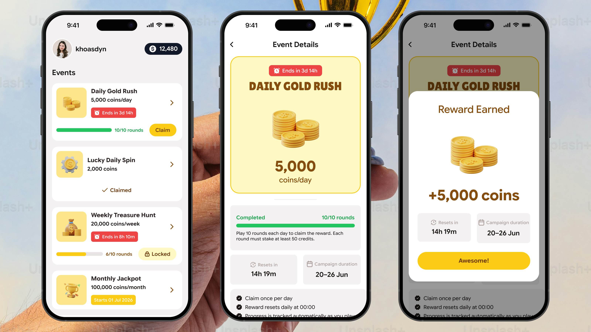
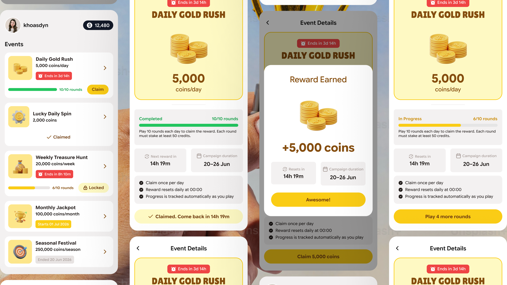
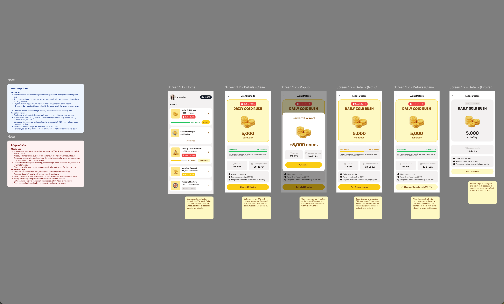
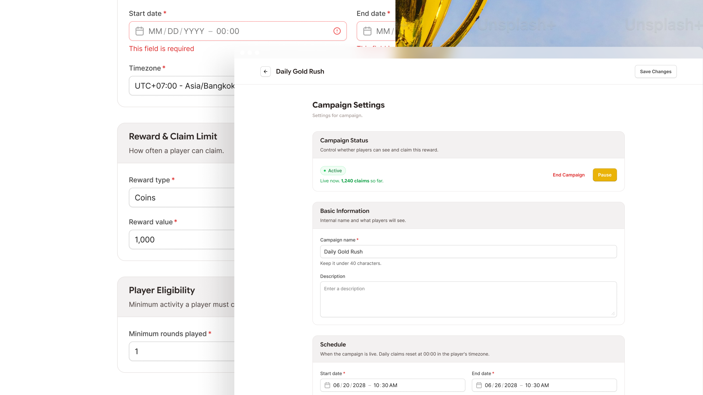
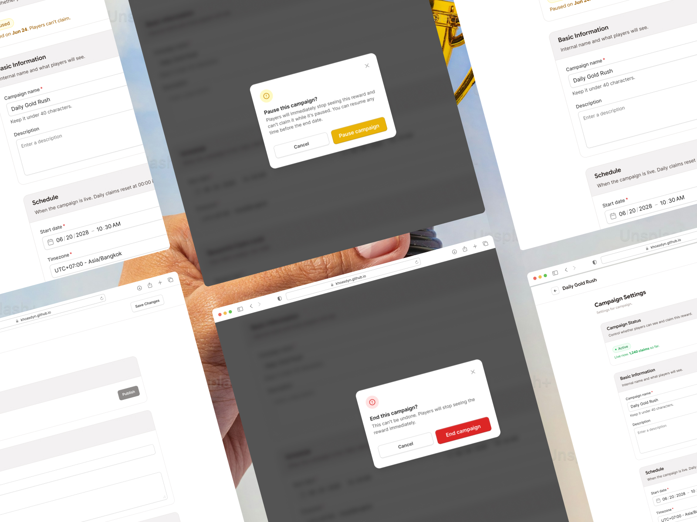
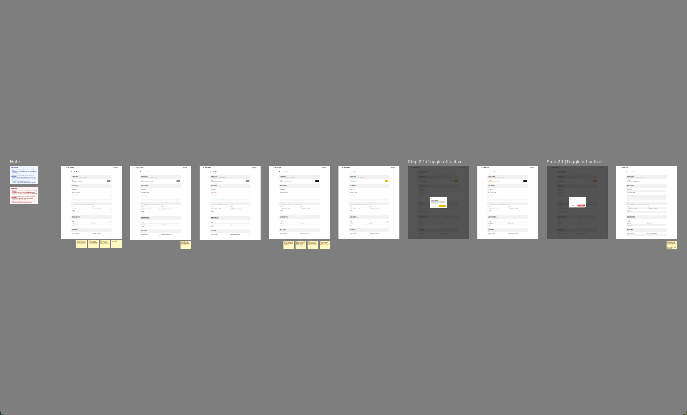

Daily Gold Rush: A Reward Campaign for a Mobile Game
One set of rules, two products. A player claims coins once a day inside a game, and an admin sets the schedule, the reward and the eligibility that decide whether they can. Almost every decision here is about states rather than screens.

Project Overview
Daily Gold Rush is a limited-time reward campaign. Players open a mobile game, play a set number of rounds at a minimum stake, and claim a coin payout once a day until the campaign ends. An admin creates that campaign in a desktop settings page, decides when it runs and what it pays, and can pause or end it while it is live.
It was a brief I set myself, and it exists only in Figma. There is no prototype and no build, nobody has used it, and the numbers on screen are made up. So this is a page about design decisions, not about results.
The work sits almost entirely in the states. A reward has to be claimable, blocked, already claimed today or expired, and a campaign has to be Draft, Active, Paused or Ended, and every one of those has to be obvious without a manual. I wrote the assumptions and the edge cases out on the canvas beside the screens, because the awkward ones are what the design has to survive.

The Button Is the Status
The events list holds five campaigns at once and no two of them are at the same point in their life. One is claimable right now, one has already been claimed today, one is still short of its round target, one does not start until July, and one ended in June.
None of them carries a status label. The button says Claim, or Claimed, or Locked, or Starts 01 Jul 2026, or Ended 20 Jun 2026, and that is the entire state model. A player reads one thing per row instead of reading a chip, reading a button, and working out which of the two to believe.
A separate status field would have been easier to build and worse to trust. The moment state lives in two places, a card can say Locked beside a button that says Claim, and the player is the one who has to resolve it. Putting the state inside the control means it can only ever say one thing.
The same rule carries into the detail screen. Its bottom button is claimable, blocked, or a claimed status line, so the player never has to scroll up to find out where they stand.

A Countdown, Not a Lockout
Every state that is not claimable carries a clock. While the player is still working towards the target it reads Resets in 14h 19m. Once they have claimed, the same field becomes Next reward in 14h 19m, and the button itself turns into a line that says Claimed. Come back in 14h 19m.
The same number can be read as a penalty or as an appointment, and the wording is what decides which. Telling someone they have already claimed today explains what they cannot do. Telling them to come back in fourteen hours answers the only question they actually have, which is when this is worth opening again.
Where it sits matters as much as what it says. The countdown replaces the button rather than appearing as a banner at the top, so the answer lands in the spot the player just tapped and their eye is already on.
Play 4 More Rounds
A player at six of ten rounds is not eligible. The standard answer is a greyed-out Claim button, probably with a tooltip explaining the rule.
A disabled button states the rule and hides the remedy. So the blocked state keeps a live button and changes what it says: Play 4 more rounds. Above it the bar reads 6/10 rounds and In Progress, and under that sits the full condition, ten rounds a day at a minimum of fifty credits a round.
The number in the label is the gap and not the target. Four is a smaller ask than ten and it is the only figure the player still has to act on, so it is the one the button carries.
Expired is the one state that does the opposite. When a campaign is over the screen drops the progress bar and the claim button entirely and keeps only the dates it ran, with Back to home as the single way out. There is no action left, so nothing on screen should imply there is one.

Publish Is the Only Gate
The admin page has two buttons and they do different jobs. Save Changes stores whatever has been typed and never touches the status, so a saved campaign is still a Draft and nobody sees it. Publish validates the form and goes live in the same click, which is why it does not need a Save step of its own.
Publish stays disabled until every required field is filled and valid. The date pickers help before it gets that far, refusing past dates and greying out any end date on or before the chosen start, so the most common way to break a campaign is closed at the input rather than caught at the end.
Validating at one door instead of everywhere is the point. A campaign that reaches players with no end date, or an end that falls before its start, is not a form error, it is money leaving the business on a schedule nobody agreed to. Everything else on the page can be half finished and saved, because a Draft costs nothing.

Pause and End Warn Differently
A live campaign offers two destructive actions side by side, and they are not the same size. Both confirmations open with the same consequence, that players stop seeing the reward immediately, and then they separate.
Pause says you can resume any time before the end date. End says this cannot be undone. The buttons follow the wording: pausing confirms on yellow, ending confirms on red.
One shared "Are you sure?" would have been less work and it would have taught the admin the wrong thing. Make the reversible action feel as heavy as the permanent one and both dialogs become something to click through, which is exactly when the permanent one gets clicked by accident. An admin pausing a campaign that has already paid out 1,240 claims needs to know, in the dialog, that pausing is a decision they can take back.

Ended Is Read-Only
When the end date passes the status flips to Ended on its own, and the page changes character. Every field greys out, Publish, Pause and Resume all disappear, and the status block stops describing settings and starts reporting: ran 20 to 26 June, 3,480 total claims.
The page stops being a form and becomes a receipt. Editing a campaign that has already paid out means the settings and the payouts no longer agree, and there is no reading of that which helps anyone. The reward value shown next to 3,480 claims has to be the value those claims were actually paid at.
It also makes Ended the only screen on either side of this project that exists purely to be looked at. Everything else, on the phone and on the desktop, is there so somebody can change something.
